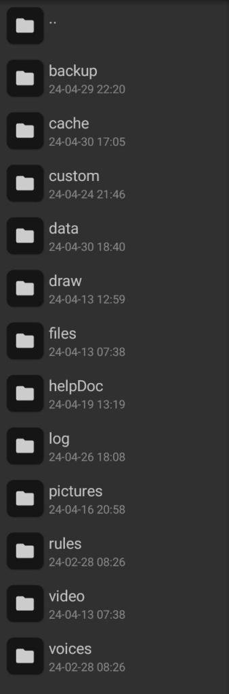

json文件怎么导入啊，toml文件怎么导入啊.jpg¶
一.我能从哪获取牌堆插件等文件¶
1.星骰官方QQ群群文件搜索 戳我查看官方QQ群
2.星骰论坛 戳我前往星骰论坛
二.我这个文件到底是什么文件¶
1.根据后缀名判断
json通常是牌堆或者自定义帮助文件
而toml则是插件文件
Warning
需要注意,星的插件并未对后缀做限制,所以不是toml后缀的不一定就不是插件文件
2.根据文件内容判断
牌堆的最上面有一个" { "而插件没有。
对于牌堆和自定义帮助，应查看其中是否含有helpdoc关键词
且自定义帮助通常会标明作者版本等信息。
三.这个文件应该装在什么位置¶
首先需要打开星骰文件夹，路径如下
根目录/AstralDice/AstralData_[此处替换为你骰娘的qq号]/
如果你打开的路径正确，那么应该显示以下界面(以MT管理器为例)
点击查看图片

文件夹的作用从上到下为
数据备份(backup)、临时文件(cche)、插件文件夹(custom)、数据文件夹(data)、牌堆文件夹(draw)、文件(files)、自定义帮助文档文件夹(helpDoc)、日志文件夹(log)、图片文件夹(pictures)、房规文件夹(rules)、视频文件夹(video)、语音文件夹(voices)
之后便可根据牌堆或者插件压缩包内资源分别放入对应文件夹
四.我插件/牌堆装完了，如何触发¶
1.可以查看随压缩包自带的help文件或者论坛页介绍
2.打开文件进行查找，
插件的触发词可找keyword(FUll/Contained/Regexp)后面的词，详情可见【回雪插件教程】
牌堆则查看对应的关键词位置，详情可见【牌堆教程】
Warning
需要注意,装完插件/牌堆后需要使用.system load 进行文件加载，如果输入后还无法触发，可以看看控制台是否有报错
五.我想做我自己的插件，怎么办¶
首先请确保自己有一定的实力，无论是写牌堆，还是插件都并非易事。
如果你做好了准备，那么你可以前往进阶功能进行学习。